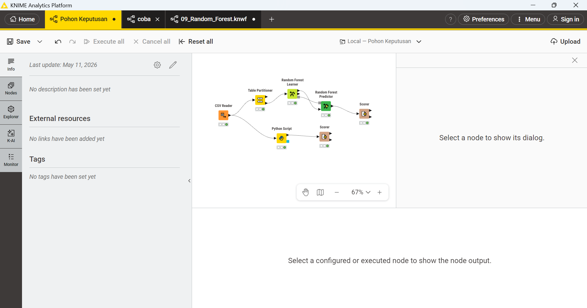
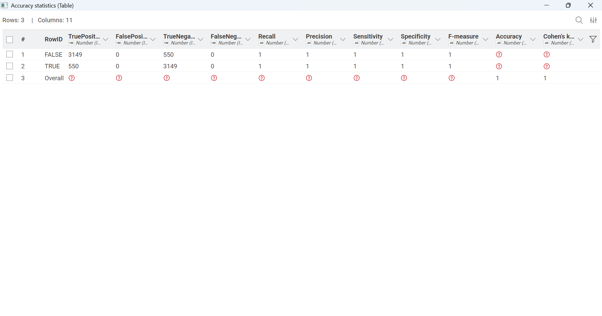
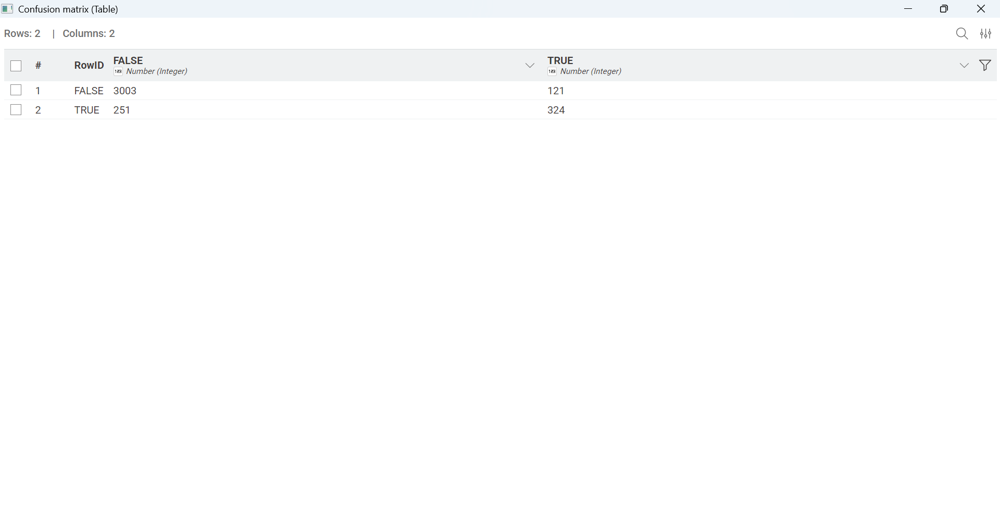
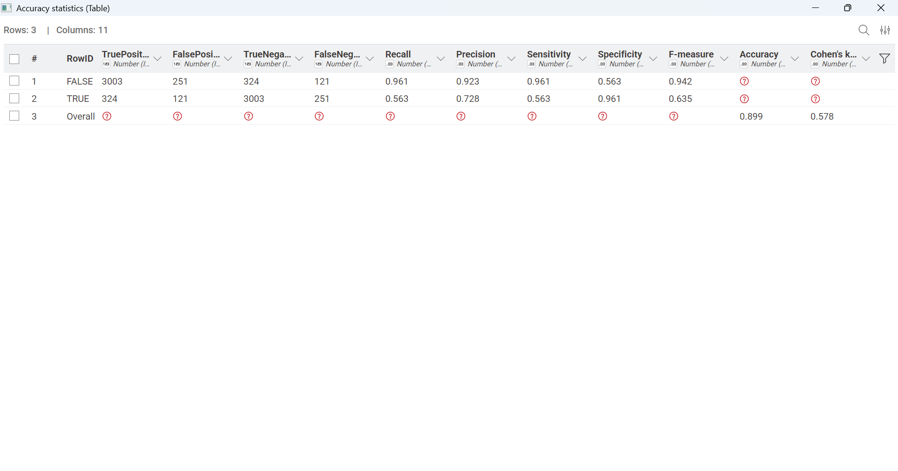

Random Forest#
Pengertian Random Forest#
Random Forest adalah algoritma Machine Learning yang digunakan untuk memecahkan masalah klasifikasi (mengelompokkan data) dan regresi (memprediksi nilai kontinu). Algoritma ini termasuk dalam kategori Ensemble Learning, yang berarti ia menggabungkan beberapa model pembelajaran mesin yang lebih kecil untuk menghasilkan satu prediksi yang jauh lebih akurat dan stabil.
Data yang Digunakan#
import pandas as pd
# Membaca file CSV
df = pd.read_csv('online_shoppers_intention.csv')
# Menampilkan data
display(df.head())
| Administrative | Administrative_Duration | Informational | Informational_Duration | ProductRelated | ProductRelated_Duration | BounceRates | ExitRates | PageValues | SpecialDay | Month | OperatingSystems | Browser | Region | TrafficType | VisitorType | Weekend | Revenue | |
|---|---|---|---|---|---|---|---|---|---|---|---|---|---|---|---|---|---|---|
| 0 | 0 | 0.0 | 0 | 0.0 | 1 | 0.000000 | 0.20 | 0.20 | 0.0 | 0.0 | Feb | 1 | 1 | 1 | 1 | Returning_Visitor | False | False |
| 1 | 0 | 0.0 | 0 | 0.0 | 2 | 64.000000 | 0.00 | 0.10 | 0.0 | 0.0 | Feb | 2 | 2 | 1 | 2 | Returning_Visitor | False | False |
| 2 | 0 | 0.0 | 0 | 0.0 | 1 | 0.000000 | 0.20 | 0.20 | 0.0 | 0.0 | Feb | 4 | 1 | 9 | 3 | Returning_Visitor | False | False |
| 3 | 0 | 0.0 | 0 | 0.0 | 2 | 2.666667 | 0.05 | 0.14 | 0.0 | 0.0 | Feb | 3 | 2 | 2 | 4 | Returning_Visitor | False | False |
| 4 | 0 | 0.0 | 0 | 0.0 | 10 | 627.500000 | 0.02 | 0.05 | 0.0 | 0.0 | Feb | 3 | 3 | 1 | 4 | Returning_Visitor | True | False |
Gambar penggunaan pada KNIME#

Code Script Python untuk Split Data, Training Data, dan Prediksi#
import pandas as pd
import knime.scripting.io as knio
from sklearn.ensemble import RandomForestClassifier
from sklearn.model_selection import train_test_split
from sklearn.preprocessing import LabelEncoder
import pickle
df = knio.input_tables[0].to_pandas()
categorical_cols = ['Month', 'VisitorType', 'Weekend', 'Revenue']
encoders = {}
for col in categorical_cols:
if col in df.columns:
le = LabelEncoder()
df[col] = le.fit_transform(df[col].astype(str))
encoders[col] = le
X = df.drop(columns=['Revenue'])
y = df['Revenue']
X_train, X_test, y_train, y_test = train_test_split(X, y, test_size=0.3, random_state=42)
rf_model = RandomForestClassifier(n_estimators=200, random_state=42)
rf_model.fit(X_train, y_train)
y_pred = rf_model.predict(X_test)
output_df = X_test.copy()
for col in ['Month', 'VisitorType', 'Weekend']:
if col in output_df.columns:
output_df[col] = encoders[col].inverse_transform(output_df[col])
output_df['Revenue'] = encoders['Revenue'].inverse_transform(y_test)
output_df['Prediction (Revenue)'] = encoders['Revenue'].inverse_transform(y_pred)
knio.output_tables[0] = knio.Table.from_pandas(output_df)
model_bytes = pickle.dumps(rf_model)
knio.output_objects[0] = model_bytes
---------------------------------------------------------------------------
ModuleNotFoundError Traceback (most recent call last)
Cell In[2], line 2
1 import pandas as pd
----> 2 import knime.scripting.io as knio
3 from sklearn.ensemble import RandomForestClassifier
4 from sklearn.model_selection import train_test_split
ModuleNotFoundError: No module named 'knime'
Perbandingan Scorer#
Menggunakan Node pada KNIME dengan Estimator 200#
Confusion Matrix#
Accuracy Statistic#

Menggunakan Script Python#
Confusion Matrix#

Accuracy Statistic#
